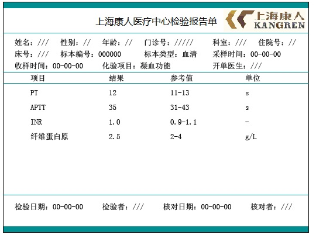
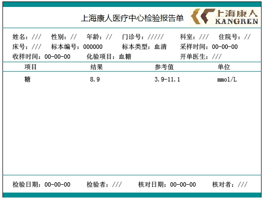
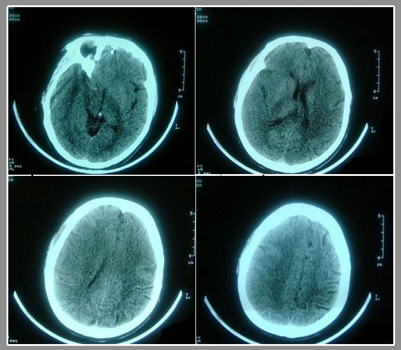
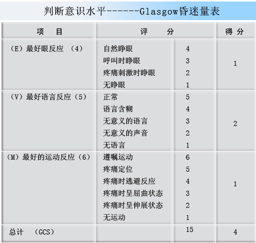
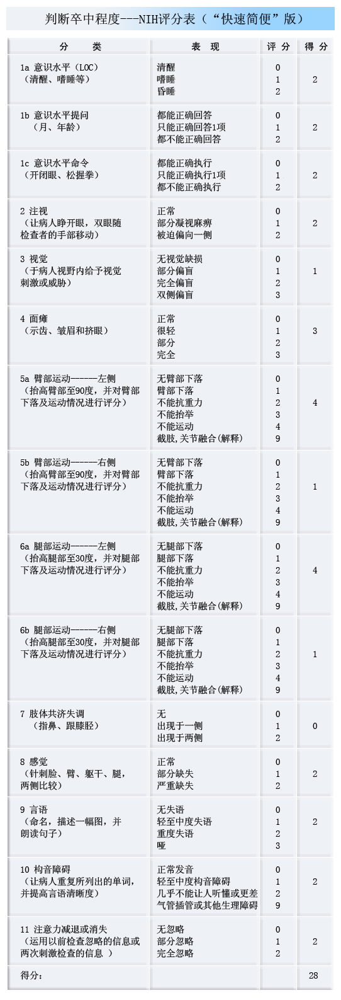
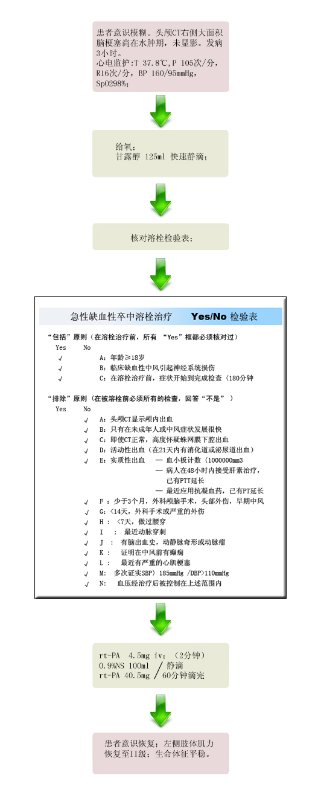

【病例摘要】
- 现病史：患者，男，67岁。突发意识模糊、左侧肢体不能活动半小时。患者半小时前在家中看电视突发头晕、头痛，呕吐一次，呕吐物为胃内容物，随即出现意识模糊，左侧肢体不能活动，言语不清。
- 既往史：发现“高血压病”20年，血压最高达180/120mmHg，平时规律服用“卡托普利 1# tid”，血压控制在120-140/90-105mmHg。否认冠心病、房颤、慢支等慢性病史。否认肝炎、结核等传染病病史。否认药物过敏史。
- 查体：T 37.8℃，P 105次/分，R 16次/分，BP 160/95mmHg，意识不清，烦躁，对答不切题，口齿不清，两侧瞳孔等大同圆，对光反射存在，左侧鼻唇沟浅，伸舌不配合。心率105次/分，未闻及明显心脏杂音，两肺呼吸音清，未及明显干湿啰音，腹软无压痛。左侧肌张力低，肢体肌力0级，右侧肢体肌力V级。左侧Babinski征（+）。

【辅助检查】
- 凝血功能:
 - 血糖:
 - 头颅CT:
 - Glasgow昏迷量表:
 - NIH卒中指数:

【诊断】
- 1.超急性右侧大面积脑梗塞 2.高血压病3级 极高危组
【事件】
